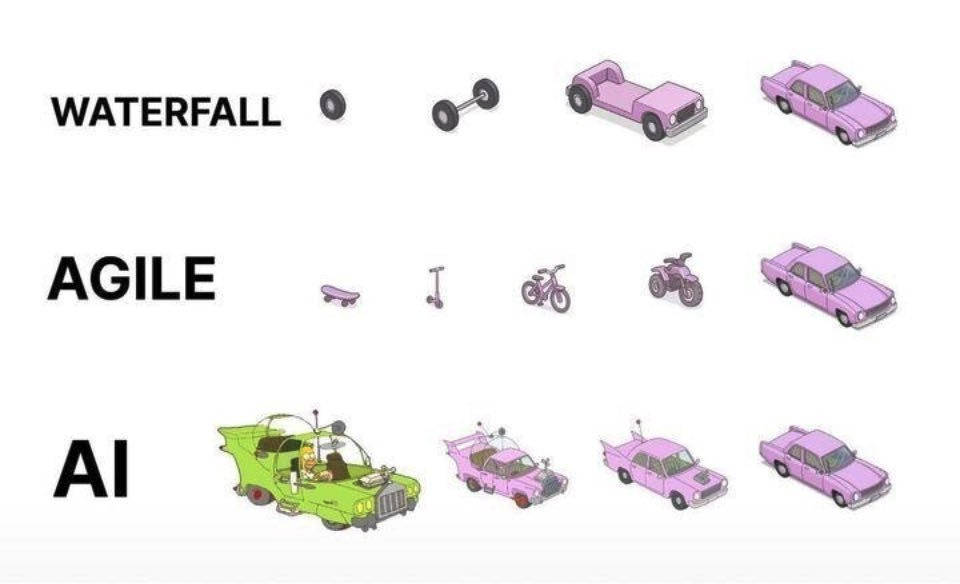

以事件为颗粒度，收录了一些产品哲学，希望对你有帮助！
PLG—霄凡分享
- Acquisition：
SEM(Search Engine Marketing)：付费流量
SEO(Search Engine Optimizing)：免费流量
SEO是为了获得机器青睐，必须要重视起来。核心：关键词（你是干什么的？）、权重。
效果：做了就有收获，coohom做了半年，就增长了10倍。
梳理出关键词、H标签等信息是产品经理的基本功，甚至可以利用热点词来获取流量。在SEO的过程中，是你了解产品最简单、最符合直觉的方式。
苏杰-AI产品创新
- AI产品创新会更大概率出现在硬件，用户与软件的交互需要载体；
- 工具型产品（携程）的价值会被降低，会管道化、会被AI代理掉；
- 交互范式会从用户->产品 到 用户->agent->产品，产品会退化为隐藏能力；
Pokee.ai 朱哲清
- 采用目标驱动式思考方式，而不是走一步看一步
- 强化学习模型本质上为决策而设计
- 别人的大语言模型，外面加一层RL层，做出来的agent无法达到商用级别的精度和鲁棒性
- 有一半的精力用于research，写代码
- 未来网络中的接口会是：Agent to Agent
Mike Krieger-红杉资本访谈
- AI产品区别于传统产品，其定义需要自下而上，最懂模型的人来做产品决策更合适；
Vibe Coding应该怎样做？
Vibe Coding的最佳实践仍然是Agile的版本迭代模式。例如你要做一个ERP系统，分成若干版本来迭代，每个版本都是独立稳定运行的。这样你基本可以保证，做出来的东西是可控的。
- v0.1: 一个可以运行的 Nextjs/TanStack 程序，有欢迎页面，可以跳转
- v0.1: 实现 users 相关数据库访问功能，在 mysql 中创建 users 表，实现 users 表的读写功能，添加读写功能的测试代码
- v0.2: 实现用户注册的网页，连接 users 相关数据库方法，能写入注册用户信息到数据库
- v0.3: 实现用户登录、注销的网页功能
- v0.4: 实现简单的 dashboard 页面
- v0.5: 实现 products 相关数据库访问功能，写功能代码和测试
- v0.6: 实现 products 在 dashboard 的管理页面，能显示列表
- v0.7: 实现 products 的添加、编辑和删除功能
Q：Waterfall的问题是什么？
A：瀑布流通常指的是各自开发很久、联调很久的情况

苹果和微信在AI上的落后？
苹果
Apple Intelligent的延期以及噱头大于实质的体验，很多YouTube数码KOL在不同程度上表达了对Apple Intelligent的失望。
微信
微信看起来做了很多AI动作，概括起来就两个层面。第一个层面，单一功能的AI化，例如公众号AI朗读、微信读书支持AI总结等；第二个层面，接入头部大模型产品，比如搜索接入deepseek、将元宝假如通讯录。
落后原因
- 两家公司对于隐私的重视
- 产品功能的克制，注重应用
2025.6.13 苹果高管圆桌
苹果AI哲学
Apple Intelligence不是一个聊天机器人(chatbot)，Siri也不是，苹果从来没想做聊天机器人。苹果的理念是将智能深度集成到所有平台的体验中(pervasive)，让它在用户需要的地方随时出现，而不是让用户“为了完成任务而去到一个专门的聊天界面”。它的意义在于让你每天做的事情变得更好。
Apple Intelligent三大亮点
- fundamental model framework：让三方开发者调用设备上的模型；
- 无处不在的实时翻译：诠释了AI集成到所有平台的体验中 这一理念；
- 屏幕视觉智能
微信的成功
小程序
2017年1月9日，十年前，乔布斯发布了第一代iPhone。小程序的走向可以用常用的Gartner曲线来形容，一开始引发无限的想象，热情和投入达到高点，然后在未达到预期后出清，接着再实现稳步的增长。微信的小程序有多么成功？看看支付宝和抖音的小程序吧。
视频号
视频号起初只有一二十人的团队。什么叫“大处着眼、小处着手”？（战术后仰）
“这是微信团队自己的一种风格，做一个新东西最好是一个小团队悄悄做，而不是大张旗鼓变成一个大项目，我们给自己目标，我们要做一定要做成它，所以这种压力是来自内在的，而不是任务式。” ———张小龙
起初，冷启动导致没有足够的内容可以推荐，一度陷入死循环。随后，微信开始了小步快跑动作，例如全面打通直播、公众号、小程序、视频号。
轻产品
轻产品是AI生成的产品，prompt就是PRD。轻产品是一种可交互的内容，和一篇文字、一个视频没本质区别，都是信息的呈现方式，他们之间可以轻松的互相转化，比如，帮儿子把一张需要背诵的单词表变成一个学英语的贪吃蛇小游戏。
Stanford 产品面试
- 面试问题：估算市场规模
拆解为多个piece：size of market->user segments->estimate the frequency of the action。采用自上而下或自下而上的估算方法。例如，美国汉堡市场规模有多少？可以拆解为：美国吃汉堡的人有多少？每人每天或每周平均吃几个汉堡？
- 面试问题：How would you design an oven for a person in a wheelchair?
不要直接设计产品功能，而是先从询问面试官需求开始（或者做假设，避免问过多的问题），包括：目标、挑战以及用户，再给出解决方案。解决方案中，包含优先级、权衡过程、MVP以及为什么
- 举一个产品失败的例子，以及团队如何处理及二次发布的
要举一个真实例子（可以将思路交给gpt润色为一个故事）面试官主要考察resilience和collaborative能力，以及你从中获得的成长
- 你如何衡量一个产品的成功？
要看产品的生命周期在哪个阶段。可以根据Pirate Metrics Framework(AARRR)来回答，即Aquisition、Activation、Retention、Revenue、Referral。
一些问题
Q：现有的AI编程产品为什么都是以 cli 的形态，例如 claude code Codex and gemini cli？cursor 、 windsurf 等通过代码编辑器的方式，为什么显得落后了？